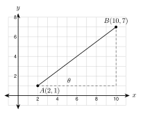

6.7 Modeling with Right Triangles
- Choose among the Pythagorean theorem, special triangles, and trigonometry
- Solve problems about ramps, stairs, and roofs
- Solve problems about towers, drones, and navigation
- Check an answer against the situation and write it in a sentence
Warm-Up
1. 361.2
2. 4.8°
3. 40 sin 60° = 203 ≈ 34.6
6.7.1A Plan and a Choice of Tools
- Step 1: Sketch. Step 2: Label every number you know.
- Step 3: Choose a tool. Step 4: Solve.
- Step 5: Check that the answer fits the situation. Step 6: Say it in a sentence with units.
| What you know | What you want | Tool |
|---|---|---|
| two sides | the third side | Pythagorean theorem |
| one side and a 45° or 30°-60° angle | the other sides | special right triangle |
| one angle and one side | another side | sin, cos, or tan |
| two sides | an angle | sin−1, cos−1, or tan−1 |
6.7.2Ramps and Stairs
- A ramp rises at most 1 inch for every 12 inches of run.
- The ramp length is the hypotenuse. Use the Pythagorean theorem.
- Stairs have one fewer tread than risers.
Run = 12 · 30 = 360 in
L = 302 + 3602 ≈ 361.2 in = 30.1 ft
θ = tan−1(30360) ≈ 4.8°
Run: 12 · 18 = 216 in = 18 ft. Length: 182 + 2162 ≈ 18.1 ft.

108 ÷ 7.75 ≈ 13.9, so at least 14 risers
Riser: 108 ÷ 14 ≈ 7.7 in Treads: 13, run = 130 in
Angle: tan−1(7.710) ≈ 37.6°
Stringer: 1082 + 1302 ≈ 169.0 in
96 ÷ 7.75 ≈ 12.4, so 13 risers. Riser: 96 ÷ 13 ≈ 7.4 in. Angle: tan−1(7.410) ≈ 36.4°.
6.7.3Roofs
- Pitch 712 means a rise of 7 for every 12 of run.
- The run is half the width of the house. An overhang adds to the horizontal distance of the rafter.

Run = 14 ft. θ = tan−1(712) ≈ 30.3°
h = 14 · 712 ≈ 8.2 ft
L = 15cos 30.3° ≈ 17.4 ft
Run = 12 ft. Rise = 5 ft. Rafter = 122 + 52 = 13 ft. Angle: tan−1(512) ≈ 22.6°.
6.7.4Navigation and Maps
- A bearing is an angle measured clockwise from north.
- North distance = distance · cos (bearing). East distance = distance · sin (bearing).
- On a map, bearing = 90° − the angle from east.

North: 40 cos 60° = 20
East: 40 sin 60° ≈ 34.6
North: 8 cos 35° ≈ 6.6 km. East: 8 sin 35° ≈ 4.6 km.

Legs: 8 and 6. AB = 82 + 62 = 10 mi
θ = tan−1(68) ≈ 36.9°
Bearing = 90° − θ = 53.1°
AB = 72 + 42 = 65 ≈ 8.1 mi. θ = tan−1(47) ≈ 29.7°. Bearing = 60.3°.
6.7.5Drones, Ladders, and Checking
Left: 60tan 50° ≈ 50.34 m
Right: 60tan 30° ≈ 103.92 m
Sum ≈ 154.3 m
80tan 40° + 80tan 25° ≈ 95.34 + 171.56 = 266.90 ≈ 266.9 m.

b = 202 − 182 ≈ 8.7 ft
The rule needs 18 ÷ 4 = 4.5 ft. Does it follow the rule? No, too flat
She added the legs. The ramp is the hypotenuse: 22 + 242 ≈ 24.1 ft.
1. Start every problem with a sketch. Label the right triangle.
2. A ramp is the hypotenuse of a triangle with rise and run as legs.
3. A bearing is measured clockwise from north.
4. Always check the answer against the situation.
Practice
Choose the tool. Write one: Pythagorean theorem, special triangle, SOH CAH TOA, or inverse trig. Do not solve.
1. Two legs are known. Find the hypotenuse. Pythagorean theorem
2. A 45°-45°-90° triangle has a leg of 12. Find the hypotenuse. special triangle
3. A right triangle has a 33° angle and a hypotenuse of 40. Find the opposite leg. SOH CAH TOA (sine)
4. The legs of a right triangle are 9 and 14. Find an acute angle. inverse trig (tan−1)
5. A 30°-60°-90° triangle has a hypotenuse of 14. Find the long leg. special triangle
6. The hypotenuse is 26 and one leg is 10. Find the other leg. Pythagorean theorem
Ramps and stairs. Sketch, label, solve, check, and answer in a sentence. Round to the nearest tenth.
7. A doorway is 27 inches above the ground. A ramp rises 1 inch for every 12 inches of run. Find the run in feet and the ramp length in feet.
run 12 · 27 = 324 in = 27 ft; length 272 + 324212 ≈ 27.1 ft
8. A skate ramp is 8 feet long and rises 3 feet. Find the angle of the ramp and the horizontal distance it covers.
angle sin−1(38) ≈ 22.0°; distance 64 − 9 ≈ 7.4 ft
9. A staircase must rise 114 inches. Each riser can be at most 7.75 inches. Find the least number of risers and the riser height. Then find the angle if each tread is 10 inches.
114 ÷ 7.75 ≈ 14.7, so 15 risers of 7.6 in; angle tan−1(0.76) ≈ 37.2°
10. A ramp with a rise of 2 feet must follow the 1-to-12 rule. How long is the run? Is the ramp longer or shorter than 24 feet? Explain.
run 24 ft. The ramp is the hypotenuse, so it is slightly longer: 22 + 242 ≈ 24.1 ft.
Roofs. Round to the nearest tenth.
11. A house is 30 feet wide. The roof has an 8/12 pitch and no overhang. Find the roof angle and the rafter length.
run 15, rise 10; angle 33.7°; rafter 152 + 102 ≈ 18.0 ft
12. A house is 26 feet wide. The roof angle is 28° and the overhang is 1.5 feet on each side. Find the rise at the peak and the rafter length from the peak to the end of the overhang.
rise 13 tan 28° ≈ 6.9 ft; rafter 14.5cos 28° ≈ 16.4 ft
13. A carport roof rises 2.5 feet over a run of 10 feet. Write the pitch as rise per 12 feet of run. Find the roof angle.
2.510 · 12 = 3, so 3/12; angle tan−1(0.25) ≈ 14.0°
Towers and wires.
14. A radio tower is 120 feet tall. A wire runs from the top to an anchor 50 feet from the base. Find the wire length and the angle the wire makes with the ground (nearest tenth).
wire 1202 + 502 = 130 ft; angle tan−1(12050) ≈ 67.4°
15. A pole is 60 feet tall. One wire makes a 45° angle with the ground. Another makes a 60° angle. Find both wire lengths. Give exact answers (use special triangles).
602 ft and 60sin 60° = 403 ft
16. From a point 150 feet from a cell tower, the angle of elevation to the top is 55°. The angle of elevation to a light below the top is 40°. How far is the light below the top? Round to the nearest tenth.
150(tan 55° − tan 40°) ≈ 88.4 ft
Navigation and maps. Round to the nearest tenth.
17. A boat sails 25 km on a bearing of 070°. How far north and how far east of its start is it?
north 25 cos 70° ≈ 8.6 km; east 25 sin 70° ≈ 23.5 km
18. A plane flies 120 miles east and then 50 miles north. How far is it from the start? What is the bearing from the start to the plane?
distance 1202 + 502 = 130 mi; bearing 90° − tan−1(50120) ≈ 67.4°
19. On a map, camp A is at (1, 1) and camp B is at (10, 8). One unit is 1 kilometer. Find AB and the angle at A above the east direction.
AB = 92 + 72 = 130 ≈ 11.4 km; angle tan−1(79) ≈ 37.9°
20. A hiker starts at (0, 0) and walks to (6, −8). One unit is 1 kilometer. How far did she walk? What angle does her path make with the x-axis?
36 + 64 = 10 km; angle tan−1(86) ≈ 53.1° below the x-axis
Drones, boats, and ladders. Round to the nearest tenth.

21. A drone is 90 meters above the ground. It sees two cars on the same side, in a line. The angles of depression are 40° and 20°. How far apart are the cars?
90tan 20° − 90tan 40° ≈ 247.27 − 107.26 ≈ 140.0 m
22. A boat is 200 feet from the base of a lighthouse. The angle of elevation from the boat to the top is 22°. How tall is the lighthouse? How far is the boat from the top?
height 200 tan 22° ≈ 80.8 ft; distance 200cos 22° ≈ 215.7 ft
23. A 16-foot ladder has its base 3 feet from a wall. How high does it reach? What angle does it make with the ground?
height 256 − 9 ≈ 15.7 ft; angle cos−1(316) ≈ 79.2°
24. A zip line makes a 12° angle with the ground. It covers 180 feet of horizontal distance. Find the length L of the cable and the drop h.
L = 180cos 12° ≈ 184.0 ft; h = 180 tan 12° ≈ 38.3 ft
Find the mistake.
25. Kofi says a roof with a 6/12 pitch has an angle of 612 = 0.5°. Find his mistake and give the correct angle.
0.5 is the tangent of the angle, not the angle. tan−1(0.5) ≈ 26.6°.
26. Lucía says: "A ladder 20 feet long reaches 18 feet up. So its base is 20 − 18 = 2 feet from the wall." Find her mistake and fix it.
She subtracted the sides. Use the Pythagorean theorem: 202 − 182 ≈ 8.7 ft.
Algebra.
27. A pole and its support wire make a right triangle with legs 3x feet (the pole) and 4x feet (the ground). The wire is 35 feet long. Find x and the angle the wire makes with the ground (nearest tenth).
(3x)2 + (4x)2 = 352, so 25x2 = 1225 and x = 7. Angle tan−1(2128) ≈ 36.9°
Test Practice
A. 2.5 feet
B. 30 feet ← correct
C. 36 feet
D. 360 feet
A. 30.0 mi
B. 34.6 mi
C. 52.0 mi ← correct
D. 69.3 mi
Challenge
The drop is 40 − 10 = 30 ft. Length = 3002 + 302 ≈ 301.5 ft. Angle = tan−1(30300) ≈ 5.7°.
Horizontal distance 16 + 1 = 17 ft. Roof angle tan−1(0.5) ≈ 26.57°. Rafter = 17cos 26.57° ≈ 19.0 ft. The shortest board that works is 20 ft.